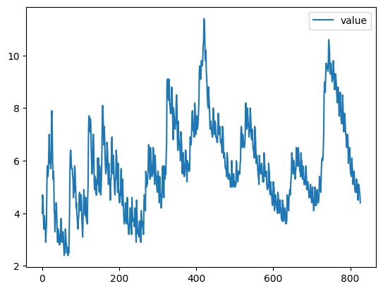
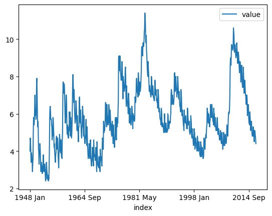
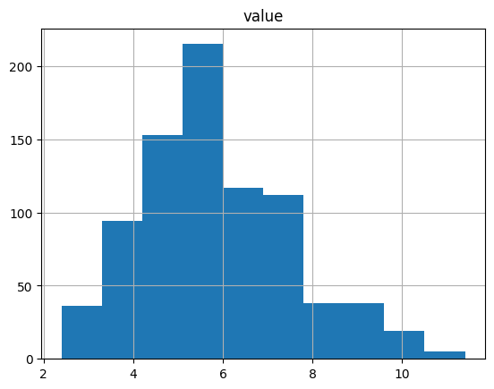
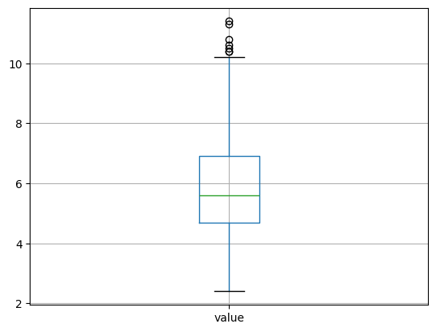

Missing Values and Split Apply Combine#
This lesson focuses on reviewing our basics with pandas and extending them to more advanced munging and cleaning. Specifically, we will discuss how to load data files, work with missing values, use split-apply-combine, use string methods, and work with string and datetime objects. By the end of this lesson you should feel confident doing basic exploratory data analysis using pandas.
OBJECTIVES
Read local files in as
DataFrameobjectsDrop missing values
Replace missing values
Impute missing values
Use
.groupbyand split-apply-combineExplore basic plotting from a
DataFrame
import os
import numpy as np
import pandas as pd
import matplotlib.pyplot as plt
import seaborn as sns
Missing Values#
Missing values are a common problem in data, whether this is because they are truly missing or there is confusion between the data encoding and the methods you read the data in using.
ufo_url = 'https://raw.githubusercontent.com/jfkoehler/nyu_bootcamp_fa25/refs/heads/main/data/ufo.csv'
#create ufo dataframe
ufo = pd.read_csv(ufo_url)
ufo.head()
| City | Colors Reported | Shape Reported | State | Time | |
|---|---|---|---|---|---|
| 0 | Ithaca | NaN | TRIANGLE | NY | 6/1/1930 22:00 |
| 1 | Willingboro | NaN | OTHER | NJ | 6/30/1930 20:00 |
| 2 | Holyoke | NaN | OVAL | CO | 2/15/1931 14:00 |
| 3 | Abilene | NaN | DISK | KS | 6/1/1931 13:00 |
| 4 | New York Worlds Fair | NaN | LIGHT | NY | 4/18/1933 19:00 |
# examine ufo info
ufo.info()
<class 'pandas.core.frame.DataFrame'>
RangeIndex: 80543 entries, 0 to 80542
Data columns (total 5 columns):
# Column Non-Null Count Dtype
--- ------ -------------- -----
0 City 80492 non-null object
1 Colors Reported 17034 non-null object
2 Shape Reported 72141 non-null object
3 State 80543 non-null object
4 Time 80543 non-null object
dtypes: object(5)
memory usage: 3.1+ MB
# one-liner to count missing values
ufo.isna().sum()
City 51
Colors Reported 63509
Shape Reported 8402
State 0
Time 0
dtype: int64
# drop missing values
ufo.dropna(subset = 'City')
| City | Colors Reported | Shape Reported | State | Time | |
|---|---|---|---|---|---|
| 0 | Ithaca | NaN | TRIANGLE | NY | 6/1/1930 22:00 |
| 1 | Willingboro | NaN | OTHER | NJ | 6/30/1930 20:00 |
| 2 | Holyoke | NaN | OVAL | CO | 2/15/1931 14:00 |
| 3 | Abilene | NaN | DISK | KS | 6/1/1931 13:00 |
| 4 | New York Worlds Fair | NaN | LIGHT | NY | 4/18/1933 19:00 |
| ... | ... | ... | ... | ... | ... |
| 80538 | Neligh | NaN | CIRCLE | NE | 9/4/2014 23:20 |
| 80539 | Uhrichsville | NaN | LIGHT | OH | 9/5/2014 1:14 |
| 80540 | Tucson | RED BLUE | NaN | AZ | 9/5/2014 2:40 |
| 80541 | Orland park | RED | LIGHT | IL | 9/5/2014 3:43 |
| 80542 | Loughman | NaN | LIGHT | FL | 9/5/2014 5:30 |
80492 rows × 5 columns
# still there?
ufo_nona = ufo.dropna( )
# fill missing values
ufo.fillna('missing')
| City | Colors Reported | Shape Reported | State | Time | |
|---|---|---|---|---|---|
| 0 | Ithaca | missing | TRIANGLE | NY | 6/1/1930 22:00 |
| 1 | Willingboro | missing | OTHER | NJ | 6/30/1930 20:00 |
| 2 | Holyoke | missing | OVAL | CO | 2/15/1931 14:00 |
| 3 | Abilene | missing | DISK | KS | 6/1/1931 13:00 |
| 4 | New York Worlds Fair | missing | LIGHT | NY | 4/18/1933 19:00 |
| ... | ... | ... | ... | ... | ... |
| 80538 | Neligh | missing | CIRCLE | NE | 9/4/2014 23:20 |
| 80539 | Uhrichsville | missing | LIGHT | OH | 9/5/2014 1:14 |
| 80540 | Tucson | RED BLUE | missing | AZ | 9/5/2014 2:40 |
| 80541 | Orland park | RED | LIGHT | IL | 9/5/2014 3:43 |
| 80542 | Loughman | missing | LIGHT | FL | 9/5/2014 5:30 |
80543 rows × 5 columns
# most common values as a dictionary
ufo.mode()
| City | Colors Reported | Shape Reported | State | Time | |
|---|---|---|---|---|---|
| 0 | Seattle | ORANGE | LIGHT | CA | 7/4/2014 22:00 |
ufo.mode().iloc[0].to_dict()
{'City': 'Seattle',
'Colors Reported': 'ORANGE',
'Shape Reported': 'LIGHT',
'State': 'CA',
'Time': '7/4/2014 22:00'}
# replace missing values with most common value
ufo.fillna(ufo.mode().iloc[0].to_dict())
| City | Colors Reported | Shape Reported | State | Time | |
|---|---|---|---|---|---|
| 0 | Ithaca | ORANGE | TRIANGLE | NY | 6/1/1930 22:00 |
| 1 | Willingboro | ORANGE | OTHER | NJ | 6/30/1930 20:00 |
| 2 | Holyoke | ORANGE | OVAL | CO | 2/15/1931 14:00 |
| 3 | Abilene | ORANGE | DISK | KS | 6/1/1931 13:00 |
| 4 | New York Worlds Fair | ORANGE | LIGHT | NY | 4/18/1933 19:00 |
| ... | ... | ... | ... | ... | ... |
| 80538 | Neligh | ORANGE | CIRCLE | NE | 9/4/2014 23:20 |
| 80539 | Uhrichsville | ORANGE | LIGHT | OH | 9/5/2014 1:14 |
| 80540 | Tucson | RED BLUE | LIGHT | AZ | 9/5/2014 2:40 |
| 80541 | Orland park | RED | LIGHT | IL | 9/5/2014 3:43 |
| 80542 | Loughman | ORANGE | LIGHT | FL | 9/5/2014 5:30 |
80543 rows × 5 columns
Problem#
Read in the dataset
churn_missing.csvfrom our repo as aDataFrameusing the url below, assign to a variablechurn_df
churn_url = 'https://raw.githubusercontent.com/jfkoehler/nyu_bootcamp_fa25/refs/heads/main/data/churn_missing.csv'
churn_df = pd.read_csv(churn_url)
churn_df.head(2)
| state | account_length | area_code | intl_plan | vmail_plan | vmail_message | day_mins | day_calls | day_charge | eve_mins | eve_calls | eve_charge | night_mins | night_calls | night_charge | intl_mins | intl_calls | intl_charge | custserv_calls | churn | |
|---|---|---|---|---|---|---|---|---|---|---|---|---|---|---|---|---|---|---|---|---|
| 0 | KS | 128 | 415 | no | yes | 25.0 | 265.1 | 110 | 45.07 | 197.4 | 99 | 16.78 | 244.7 | 91 | 11.01 | 10.0 | 3 | 2.7 | 1 | False |
| 1 | OH | 107 | 415 | no | yes | 26.0 | 161.6 | 123 | 27.47 | 195.5 | 103 | 16.62 | 254.4 | 103 | 11.45 | 13.7 | 3 | 3.7 | 1 | False |
churn_df.agg({'account_length': 'mean', 'area_code': 'median'})
account_length 101.064806
area_code 415.000000
dtype: float64
Are there any missing values? What columns are they in and how many are there?
churn_df.shape[0]
3333
churn_df[['vmail_plan', 'vmail_message']]
| vmail_plan | vmail_message | |
|---|---|---|
| 0 | yes | 25.0 |
| 1 | yes | 26.0 |
| 2 | no | 0.0 |
| 3 | no | 0.0 |
| 4 | no | 0.0 |
| ... | ... | ... |
| 3328 | yes | 36.0 |
| 3329 | no | 0.0 |
| 3330 | no | 0.0 |
| 3331 | no | 0.0 |
| 3332 | yes | 25.0 |
3333 rows × 2 columns
churn_df.isna().sum()/churn_df.shape[0]
state 0.000000
account_length 0.000000
area_code 0.000000
intl_plan 0.000000
vmail_plan 0.120012
vmail_message 0.120012
day_mins 0.000000
day_calls 0.000000
day_charge 0.000000
eve_mins 0.000000
eve_calls 0.000000
eve_charge 0.000000
night_mins 0.000000
night_calls 0.000000
night_charge 0.000000
intl_mins 0.000000
intl_calls 0.000000
intl_charge 0.000000
custserv_calls 0.000000
churn 0.000000
dtype: float64
What do you think we should do about these? Drop, replace, impute?
churn_df.fillna({'vmail_plan': 'no',
'vmail_message': churn_df['vmail_message'].mean()})
| state | account_length | area_code | intl_plan | vmail_plan | vmail_message | day_mins | day_calls | day_charge | eve_mins | eve_calls | eve_charge | night_mins | night_calls | night_charge | intl_mins | intl_calls | intl_charge | custserv_calls | churn | |
|---|---|---|---|---|---|---|---|---|---|---|---|---|---|---|---|---|---|---|---|---|
| 0 | KS | 128 | 415 | no | yes | 25.0 | 265.1 | 110 | 45.07 | 197.4 | 99 | 16.78 | 244.7 | 91 | 11.01 | 10.0 | 3 | 2.70 | 1 | False |
| 1 | OH | 107 | 415 | no | yes | 26.0 | 161.6 | 123 | 27.47 | 195.5 | 103 | 16.62 | 254.4 | 103 | 11.45 | 13.7 | 3 | 3.70 | 1 | False |
| 2 | NJ | 137 | 415 | no | no | 0.0 | 243.4 | 114 | 41.38 | 121.2 | 110 | 10.30 | 162.6 | 104 | 7.32 | 12.2 | 5 | 3.29 | 0 | False |
| 3 | OH | 84 | 408 | yes | no | 0.0 | 299.4 | 71 | 50.90 | 61.9 | 88 | 5.26 | 196.9 | 89 | 8.86 | 6.6 | 7 | 1.78 | 2 | False |
| 4 | OK | 75 | 415 | yes | no | 0.0 | 166.7 | 113 | 28.34 | 148.3 | 122 | 12.61 | 186.9 | 121 | 8.41 | 10.1 | 3 | 2.73 | 3 | False |
| ... | ... | ... | ... | ... | ... | ... | ... | ... | ... | ... | ... | ... | ... | ... | ... | ... | ... | ... | ... | ... |
| 3328 | AZ | 192 | 415 | no | yes | 36.0 | 156.2 | 77 | 26.55 | 215.5 | 126 | 18.32 | 279.1 | 83 | 12.56 | 9.9 | 6 | 2.67 | 2 | False |
| 3329 | WV | 68 | 415 | no | no | 0.0 | 231.1 | 57 | 39.29 | 153.4 | 55 | 13.04 | 191.3 | 123 | 8.61 | 9.6 | 4 | 2.59 | 3 | False |
| 3330 | RI | 28 | 510 | no | no | 0.0 | 180.8 | 109 | 30.74 | 288.8 | 58 | 24.55 | 191.9 | 91 | 8.64 | 14.1 | 6 | 3.81 | 2 | False |
| 3331 | CT | 184 | 510 | yes | no | 0.0 | 213.8 | 105 | 36.35 | 159.6 | 84 | 13.57 | 139.2 | 137 | 6.26 | 5.0 | 10 | 1.35 | 2 | False |
| 3332 | TN | 74 | 415 | no | yes | 25.0 | 234.4 | 113 | 39.85 | 265.9 | 82 | 22.60 | 241.4 | 77 | 10.86 | 13.7 | 4 | 3.70 | 0 | False |
3333 rows × 20 columns
groupby#
Often, you are faced with a dataset that you are interested in summaries within groups based on a condition. The simplest condition is that of a unique value in a single column. Using .groupby you can split your data into unique groups and summarize the results.
NOTE: After splitting you need to summarize!

# sample data
titanic = sns.load_dataset('titanic')
titanic.head()
| survived | pclass | sex | age | sibsp | parch | fare | embarked | class | who | adult_male | deck | embark_town | alive | alone | |
|---|---|---|---|---|---|---|---|---|---|---|---|---|---|---|---|
| 0 | 0 | 3 | male | 22.0 | 1 | 0 | 7.2500 | S | Third | man | True | NaN | Southampton | no | False |
| 1 | 1 | 1 | female | 38.0 | 1 | 0 | 71.2833 | C | First | woman | False | C | Cherbourg | yes | False |
| 2 | 1 | 3 | female | 26.0 | 0 | 0 | 7.9250 | S | Third | woman | False | NaN | Southampton | yes | True |
| 3 | 1 | 1 | female | 35.0 | 1 | 0 | 53.1000 | S | First | woman | False | C | Southampton | yes | False |
| 4 | 0 | 3 | male | 35.0 | 0 | 0 | 8.0500 | S | Third | man | True | NaN | Southampton | no | True |
# survival rate of each sex?
titanic.groupby('sex')['survived'].mean()
sex
female 0.742038
male 0.188908
Name: survived, dtype: float64
# survival rate of each class?
titanic.groupby('class')['survived'].mean()
/var/folders/8v/7bhy8yqn04b7rzqglb2s38200000gn/T/ipykernel_67944/3036205504.py:2: FutureWarning: The default of observed=False is deprecated and will be changed to True in a future version of pandas. Pass observed=False to retain current behavior or observed=True to adopt the future default and silence this warning.
titanic.groupby('class')['survived'].mean()
class
First 0.629630
Second 0.472826
Third 0.242363
Name: survived, dtype: float64
# each class and sex survival rate
titanic.groupby(['class', 'sex'])[['survived']].mean()
/var/folders/8v/7bhy8yqn04b7rzqglb2s38200000gn/T/ipykernel_67944/3320218811.py:2: FutureWarning: The default of observed=False is deprecated and will be changed to True in a future version of pandas. Pass observed=False to retain current behavior or observed=True to adopt the future default and silence this warning.
titanic.groupby(['class', 'sex'])[['survived']].mean()
| survived | ||
|---|---|---|
| class | sex | |
| First | female | 0.968085 |
| male | 0.368852 | |
| Second | female | 0.921053 |
| male | 0.157407 | |
| Third | female | 0.500000 |
| male | 0.135447 |
# working with multi-index -- changing form of results
titanic.groupby(['class', 'sex'], as_index = False)[['survived']].mean()
/var/folders/8v/7bhy8yqn04b7rzqglb2s38200000gn/T/ipykernel_67944/3906719161.py:2: FutureWarning: The default of observed=False is deprecated and will be changed to True in a future version of pandas. Pass observed=False to retain current behavior or observed=True to adopt the future default and silence this warning.
titanic.groupby(['class', 'sex'], as_index = False)[['survived']].mean()
| class | sex | survived | |
|---|---|---|---|
| 0 | First | female | 0.968085 |
| 1 | First | male | 0.368852 |
| 2 | Second | female | 0.921053 |
| 3 | Second | male | 0.157407 |
| 4 | Third | female | 0.500000 |
| 5 | Third | male | 0.135447 |
# age less than 40 survival rate
titanic['age'] < 40
0 True
1 True
2 True
3 True
4 True
...
886 True
887 True
888 False
889 True
890 True
Name: age, Length: 891, dtype: bool
less_than_40 = titanic['age'] < 40
titanic.groupby(less_than_40)['survived'].mean()
age
False 0.332353
True 0.415608
Name: survived, dtype: float64
Problems#
tips = sns.load_dataset('tips')
tips.head(2)
| total_bill | tip | sex | smoker | day | time | size | |
|---|---|---|---|---|---|---|---|
| 0 | 16.99 | 1.01 | Female | No | Sun | Dinner | 2 |
| 1 | 10.34 | 1.66 | Male | No | Sun | Dinner | 3 |
Average tip for smokers vs. non-smokers.
tips.groupby('smoker')['tip'].mean()
/var/folders/8v/7bhy8yqn04b7rzqglb2s38200000gn/T/ipykernel_67944/2919508398.py:1: FutureWarning: The default of observed=False is deprecated and will be changed to True in a future version of pandas. Pass observed=False to retain current behavior or observed=True to adopt the future default and silence this warning.
tips.groupby('smoker')['tip'].mean()
smoker
Yes 3.008710
No 2.991854
Name: tip, dtype: float64
Average bill by day and time.
tips.groupby(['day', 'time'])['total_bill'].mean()
/var/folders/8v/7bhy8yqn04b7rzqglb2s38200000gn/T/ipykernel_67944/1203280366.py:1: FutureWarning: The default of observed=False is deprecated and will be changed to True in a future version of pandas. Pass observed=False to retain current behavior or observed=True to adopt the future default and silence this warning.
tips.groupby(['day', 'time'])['total_bill'].mean()
day time
Thur Lunch 17.664754
Dinner 18.780000
Fri Lunch 12.845714
Dinner 19.663333
Sat Lunch NaN
Dinner 20.441379
Sun Lunch NaN
Dinner 21.410000
Name: total_bill, dtype: float64
What is another question
groupbycan help us answer here?
tips['tip_pct'] = tips['tip']/tips['total_bill']
tips.groupby('sex')['tip_pct'].mean()
/var/folders/8v/7bhy8yqn04b7rzqglb2s38200000gn/T/ipykernel_67944/3543391185.py:2: FutureWarning: The default of observed=False is deprecated and will be changed to True in a future version of pandas. Pass observed=False to retain current behavior or observed=True to adopt the future default and silence this warning.
tips.groupby('sex')['tip_pct'].mean()
sex
Male 0.157651
Female 0.166491
Name: tip_pct, dtype: float64
Plotting from a DataFrame#
Next class we will introduce two plotting libraries – matplotlib and seaborn. It turns out that a DataFrame also inherits a good bit of matplotlib functionality, and plots can be created directly from a DataFrame.
url = 'https://raw.githubusercontent.com/evorition/astsadata/refs/heads/main/astsadata/data/UnempRate.csv'
unemp = pd.read_csv(url)
unemp.head()
| index | value | |
|---|---|---|
| 0 | 1948 Jan | 4.0 |
| 1 | 1948 Feb | 4.7 |
| 2 | 1948 Mar | 4.5 |
| 3 | 1948 Apr | 4.0 |
| 4 | 1948 May | 3.4 |
#default plot is line
unemp.plot()
<Axes: >

unemp.head()
| index | value | |
|---|---|---|
| 0 | 1948 Jan | 4.0 |
| 1 | 1948 Feb | 4.7 |
| 2 | 1948 Mar | 4.5 |
| 3 | 1948 Apr | 4.0 |
| 4 | 1948 May | 3.4 |
unemp = pd.read_csv(url, index_col = 0)
unemp.head()
| value | |
|---|---|
| index | |
| 1948 Jan | 4.0 |
| 1948 Feb | 4.7 |
| 1948 Mar | 4.5 |
| 1948 Apr | 4.0 |
| 1948 May | 3.4 |
unemp.info()
<class 'pandas.core.frame.DataFrame'>
Index: 827 entries, 1948 Jan to 2016 Nov
Data columns (total 1 columns):
# Column Non-Null Count Dtype
--- ------ -------------- -----
0 value 827 non-null float64
dtypes: float64(1)
memory usage: 12.9+ KB
unemp.plot()
<Axes: xlabel='index'>

unemp.hist()
array([[<Axes: title={'center': 'value'}>]], dtype=object)

unemp.boxplot()
<Axes: >

#create a new column of shifted measurements
unemp['shifted'] = unemp.shift()
unemp.plot()
unemp.plot(x = 'value', y = 'shifted', kind = 'scatter')
unemp.plot(x = 'value', y = 'shifted', kind = 'scatter', title = 'Unemployment Data', grid = True);
More with pandas and plotting here.
datetime#
A special type of data for pandas are entities that can be considered as dates. We can create a special datatype for these using pd.to_datetime, and access the functions of the datetime module as a result.
#ufo date column
#make it a datetime
#assign as time column
#investigate datatypes
#set as index
#sort the values
#groupby month and average
Data Resources#
NYU has a number of resources for acquiring data with applications to economics and finance here.
See you Thursday!